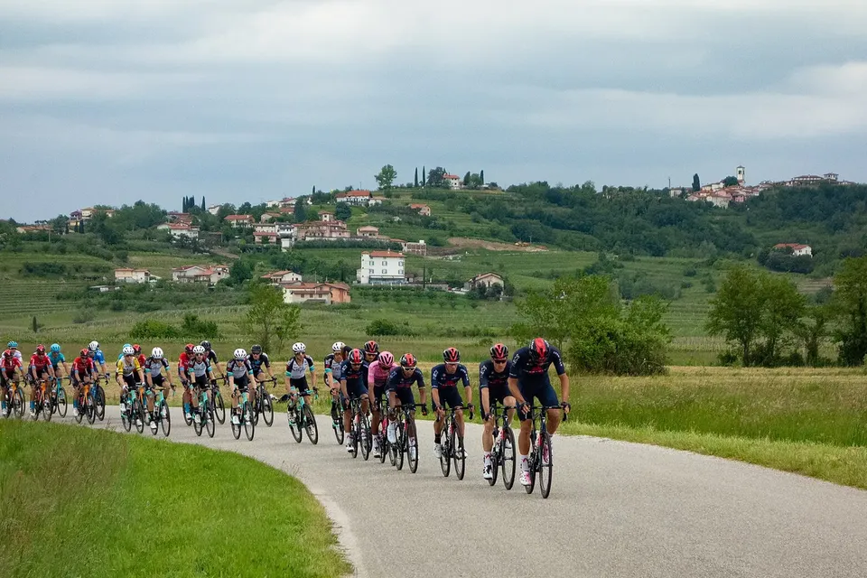

Zone 2 training: slow is smooth, and smooth is fast
Giro d’Italia 2021, stage 15. Photo: Petar Milošević, Wikimedia Commons, CC BY-SA 4.0
Zone 2 is one of the big buzzwords in endurance sport: pros swear by it, podcasts spend hours on it, and every sports watch shows it in colour. Behind the hype sits a solid idea – if you do a lot of easy training, you get faster in the long run. Here's what Zone 2 actually is, why the name causes so much confusion, how to find your pace without a lab, and what the research really shows.
What the best actually do
It didn't start with a theory but with an observation. When sports scientists analysed the training logs of nationally and internationally successful endurance athletes, they found a strikingly similar pattern across many sports: around 80 percent of sessions were genuinely easy, and only about 20 percent included hard efforts such as intervals[1][2]. In a group of nationally competitive junior cross-country skiers, about three quarters of all endurance sessions fell into the lowest zone – measured both by heart rate and by how hard the athletes said the session felt[2].
Just as telling is where this training doesn't happen: in the middle, the effort that feels "properly hard" but is neither truly easy nor truly tough. That's exactly where many ambitious amateurs like to train – and it's the zone the best avoid surprisingly consistently[2].
Two zone models, one misunderstanding
Before we get practical, one term needs clearing up, or you'll end up talking at cross purposes. Research usually splits intensity into three zones, separated by two thresholds. The first threshold – known as the ventilatory or aerobic threshold – is the point where your breathing gets noticeably deeper and faster and blood lactate starts to rise. The second threshold marks the shift into efforts you can only hold for a limited time. Below, between and above – those are zones 1, 2 and 3[2].
So in the three-zone model, Zone 2 is precisely the middle ground the elite tend to avoid. The "Zone 2" everyone talks about today comes from five-zone models used by coaches, sports watches and bike computers. There, Zone 2 is the top end of the easy range, just below the first threshold. In this article, Zone 2 always means the second version: as fast as possible without crossing that first threshold.
Why easy training works
Regular endurance training changes your muscles. They build more mitochondria – the cell's power plants, where fat and carbohydrate are burned with oxygen to release energy. As a result, a trained muscle is less thrown off balance by the same workload: it burns more fat, spares its carbohydrate stores and produces less lactate[6]. That's what carries you through a long run or a long ride.
A widely cited study shows the difference clearly: at the same workload, professional endurance athletes burned more fat and had less lactate in their blood than moderately active people – and the more fat someone burned, the lower their lactate[7]. A good part of today's Zone 2 craze traces back to this work. But it shows how trained and less-trained people differ, not that Zone 2 is the only way to get there. What happens inside the muscle in detail will get its own article in our Science series.
The second advantage is simpler: easy training doesn't wear you out. You can do a lot of it and still recover in time for the few sessions that are meant to be genuinely hard. In well-trained runners, race performance was closely linked to the time they had spent in the easy zone[3].
What the studies show – and what they don't
For recreational runners there's one particularly revealing study. Two groups trained for a 10 km race for ten weeks. One spent about three quarters of its training time in the easy zone, the other much more in the middle zone. Both got faster – the easy group by 5.0 percent on average, the other by 3.6 percent – though the overall difference wasn't clear-cut. The biggest gains came from the runners who stuck most strictly to the easy distribution[4].
The experts don't fully agree, though. A 2024 review pooled 17 studies comparing strictly "polarised" training – lots of easy, some very hard, hardly anything in between – with other distributions. The polarised approach raised maximal oxygen uptake a little more, mainly in highly trained athletes and over shorter training blocks. For time-trial and race performance, however, there was no difference[5]. Whether your hard sessions are always very hard or sometimes just moderately hard matters less than you might think. What every successful model shares is a big share of genuinely easy training.
Finding your Zone 2 without a lab
The most precise way to find your first threshold is a lab test with gas analysis or lactate measurements[2]. For most amateurs there's a simpler and surprisingly reliable option: the talk test. As long as you can comfortably talk in full sentences, you're below the first threshold; once speaking gets noticeably harder, you've crossed it[9]. In experiments, this point even moved when the threshold changed through training or after giving blood – so the talk test tracks your actual fitness[8]. It works just as well for walking, running and cycling[9].
Heart rate zones on your watch are convenient, but take them with a pinch of salt. Most watches work from a percentage of your maximum heart rate, which they often just estimate from your age. The well-known "220 minus age" formula is considered outdated; a large analysis came up with 208 minus 0.7 times age[10]. But even with a measured maximum, fixed percentages put different people in different intensity domains[11]. Use your watch zones as a guide and check them against the talk test. If the two disagree, trust the talk test.
Running and riding: two quirks
When running, Zone 2 feels unusually slow for many people, especially beginners. If you've always run every session "at a decent clip", you may need to walk a few steps on climbs to stay easy. Running coaches like to say this isn't a step backwards – it's the whole point. After a few weeks, you'll run noticeably faster at the same heart rate.
On the bike, Zone 2 is easier to hold because your gears let you control the effort precisely. The traps are different: short climbs that send your heart rate soaring, and group rides where the strongest riders set the pace. For easy sessions, a flat loop or the turbo trainer works better than the fast Sunday bunch. How to make the most of the turbo in winter is covered in “Turbo season”.
Common mistakes
The most common one: easy sessions get too fast. It feels productive, but fatigue builds up and your hard sessions suffer. The second: nothing but Zone 2. The data from elite sport also show a steady share of hard sessions, about one fifth[1]; train only easy and you leave some progress on the table. The third: too little time. Zone 2 works over many hours and many weeks – two easy half-hours a week won't get you far. How to plan your week so easy days really help you recover is in “Recovery is where you get fitter”.
The bottom line
Zone 2 isn't a secret trick. It's what successful endurance athletes have done for decades: most of their training, genuinely easy. Three things make the difference. First, set your easy sessions by the talk test, not by your ego. Second, keep one or two hard sessions a week. Third, be patient – the gains come over weeks and months, and they last.
Easy miles with a group
Plenty of running groups and cycling clubs go at chatting pace – perfect for your Zone 2. And once your base is in place: your next goal.
Sources
- Seiler S.: What is best practice for training intensity and duration distribution in endurance athletes? Int J Sports Physiol Perform 2010;5:276–291. doi:10.1123/ijspp.5.3.276
- Seiler K. S., Kjerland G. Ø.: Quantifying training intensity distribution in elite endurance athletes: is there evidence for an "optimal" distribution? Scand J Med Sci Sports 2006;16:49–56. doi:10.1111/j.1600-0838.2004.00418.x
- Esteve-Lanao J., San Juan A. F., Earnest C. P., Foster C., Lucia A.: How do endurance runners actually train? Relationship with competition performance. Med Sci Sports Exerc 2005;37:496–504. doi:10.1249/01.mss.0000155393.78744.86
- Muñoz I., Seiler S., Bautista J., España J., Larumbe E., Esteve-Lanao J.: Does polarized training improve performance in recreational runners? Int J Sports Physiol Perform 2014;9:265–272. doi:10.1123/ijspp.2012-0350
- Silva Oliveira P., Boppre G., Fonseca H.: Comparison of Polarized Versus Other Types of Endurance Training Intensity Distribution on Athletes' Endurance Performance: A Systematic Review with Meta-analysis. Sports Med 2024;54:2071–2095. PMC11329428
- Holloszy J. O., Coyle E. F.: Adaptations of skeletal muscle to endurance exercise and their metabolic consequences. J Appl Physiol 1984;56:831–838. doi:10.1152/jappl.1984.56.4.831
- San-Millán I., Brooks G. A.: Assessment of Metabolic Flexibility by Means of Measuring Blood Lactate, Fat, and Carbohydrate Oxidation Responses to Exercise in Professional Endurance Athletes and Less-Fit Individuals. Sports Med 2018;48:467–479. doi:10.1007/s40279-017-0751-x
- Foster C. et al.: The talk test as a marker of exercise training intensity. J Cardiopulm Rehabil Prev 2008;28:24–30. doi:10.1097/01.HCR.0000311504.41775.78
- Reed J. L., Pipe A. L.: The talk test: a useful tool for prescribing and monitoring exercise intensity. Curr Opin Cardiol 2014;29:475–480. doi:10.1097/HCO.0000000000000097
- Tanaka H., Monahan K. D., Seals D. R.: Age-predicted maximal heart rate revisited. J Am Coll Cardiol 2001;37:153–156. doi:10.1016/S0735-1097(00)01054-8
- Jamnick N. A., Pettitt R. W., Granata C., Pyne D. B., Bishop D. J.: An Examination and Critique of Current Methods to Determine Exercise Intensity. Sports Med 2020;50:1729–1756. doi:10.1007/s40279-020-01322-8
All sources accessed on 26 November 2026. The tips about walking on climbs and choosing your route on the bike reflect practical coaching experience.


.jpg){kind=link}